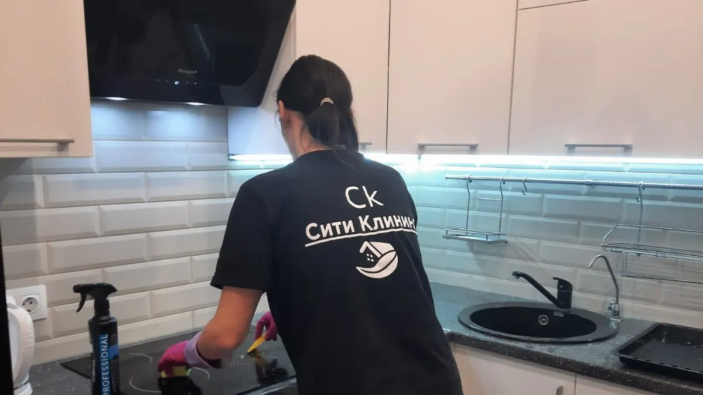
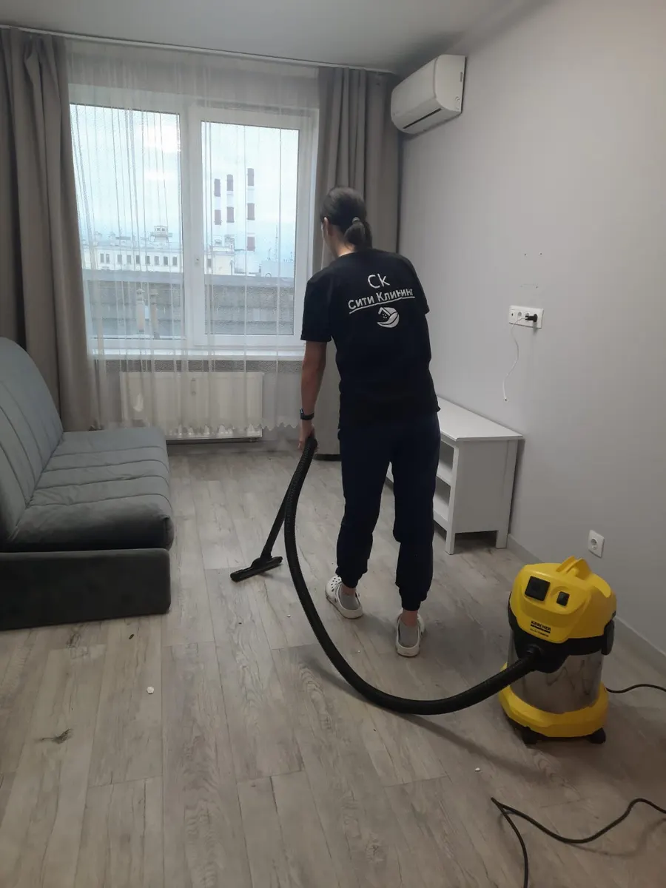
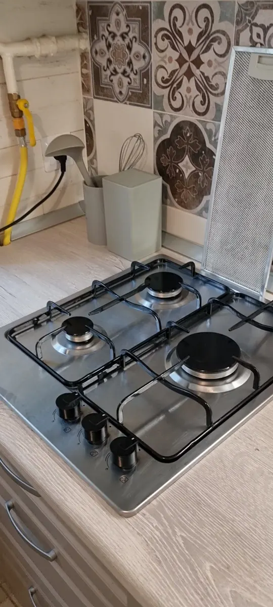
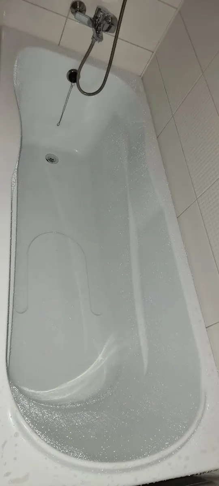

Клининг · Санкт-Петербург и область
Уборка квартир и домов в Санкт-Петербурге и области
Генеральная уборка, уборка после ремонта, мытьё окон и балконов, химчистка мягкой мебели. Оборудование и химию привозим с собой.
- Цена за м² – на сайте
- Оборудование и химия – с нами
- Рейтинг 4,8 на Яндекс.Картах

Цены из прайса
Цены с карточки в Яндекс Картах. Уборка считается по площади, окна и мебель – за услугу.
За м² площади
- Генеральная уборкаквартиры и дома в Санкт-Петербурге и Ленинградской области250 ₽ за м²
- Уборка после ремонтаквартиры и дома240 ₽ за м²
За услугу
- Мытьё окон и балконовв Санкт-Петербурге и области1 200 ₽
- Химчистка мягкой мебелидиваны, кресла; в разделе указан диапазон 2 900–15 000 ₽3 700 ₽
Цены на карточке давно не обновлялись – актуальную сумму называют при заказе.
Как заказать
- 01
Заявка
Пишете в WhatsApp или Telegram: что убрать, площадь, адрес.
- 02
Расчёт
Генеральная – 250 ₽ за м², после ремонта – 240 ₽ за м².
- 03
Приезд
Бригада приезжает с оборудованием и химией.
- 04
Уборка
Квартиры и дома, окна и балконы, мягкая мебель.



Что пишут клиенты
Всё привозят с собой
Отзыв 2025: оборудование и химию привезли тоже.
Тщательно и честно
Отзыв 2022: уборка в квартире – профессионально и честно.
Чисто после съезда жильцов
Отзыв 2023: уборка с мытьём окон – чистота идеальная.
Отзывы с Яндекс.Карт
«Оперативная бригада сотрудников, все с собой привезли , отмыли дом от застарелого состояния , оборудование и химию привезли тоже Очень рекомендую»
Валерия Шевякова · 19 декабря 2025
«Очень хочется поблагодарить работников компании Виктора и Татьяну за тщательную уборку, сделанную в моей квартире. Всё выполнено профессионально и честно»
Ольга Питулина · 11 декабря 2022
«Заказывала уборку после съезда жильцов с мытьем окон. Всё прошло на высшем уровне, чистота идеальная. Поэтому рекомендую эту компанию!!!!»
Олеся В. · 19 февраля 2023
Отзывы с карточки на Яндекс.Картах, без правок.
Частые вопросы
Сколько стоит уборка?
Генеральная – 250 ₽ за м², после ремонта – 240 ₽ за м². Мытьё окон – 1 200 ₽, химчистка мягкой мебели – 3 700 ₽.
Нужны ли мои средства?
Нет: в отзыве клиентка пишет, что бригада привезла оборудование и химию с собой.
Куда выезжаете?
В Санкт-Петербурге и Ленинградской области.
Когда работаете?
Пн–Пт с 9:00 до 21:00, Сб–Вс с 10:00 до 21:00. Запись предварительная.
Назовите площадь – посчитаем уборку
- Адрес
- Большая Зеленина улица, 8, корп. 2, Санкт-Петербург
- Часы
- Пн–Пт 9:00–21:00, Сб–Вс 10:00–21:00
- Телефон
- +7 (911) 038-34-38